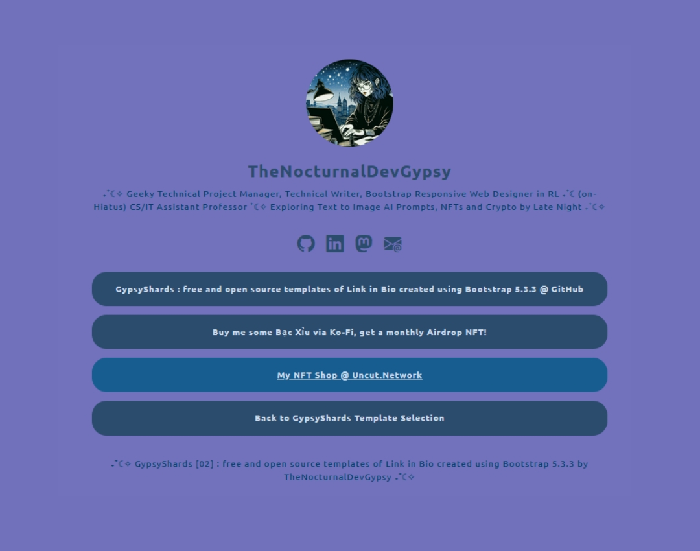
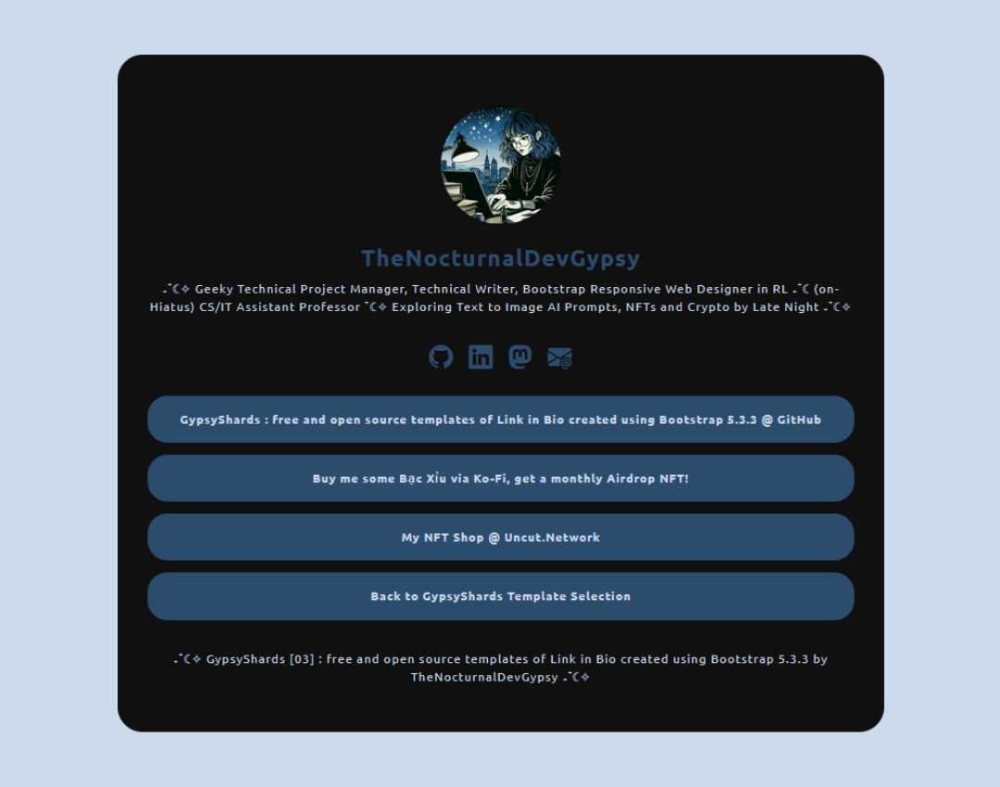

Looks like you stumbled to one of my personal project at GitHub, GypsyShards: one of my active personal project for refreshing my skills with the latest Bootstrap's release (5.3.3), focusing with creating Responsive (`mobile`, `tablet` and `desktop`) Link in Bio templates.
If you find this repo helpful, please don't forget to and at GitHub, also, maybe buy me at Ko-Fi.
Theme 001.01 - Basic Link in Bio: Profile Picture, H1, Description, Quick Social Media Links, Link Buttons and Simple Footer.
Theme 001.02 - Another Basic Link in Bio: Responsive Background Image, Semi-transparent Container, Profile Picture, H1, Description, Quick Social Media Links, Border Hover Link Buttons and Simple Footer.
Theme 001.03 - Semi-Basic Link in Bio: Half-image/Half-solid color Container, Profile Picture, H1, Description, Quick Social Media Links, Link Buttons with H2 Title and Description, and Simple Footer